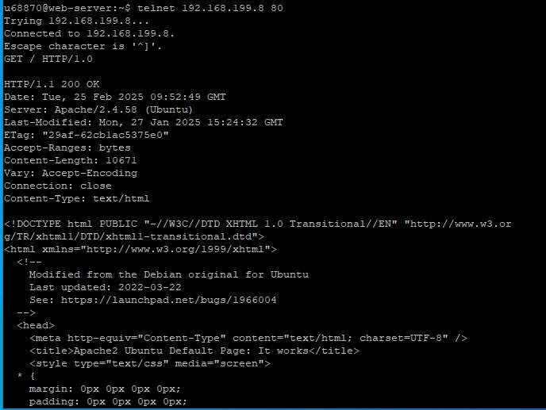
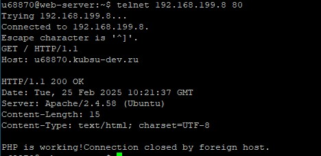
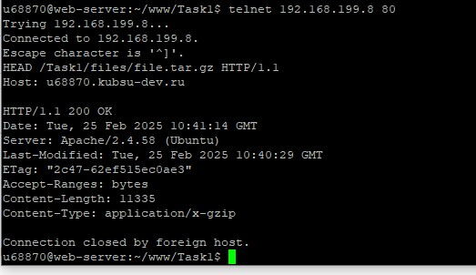
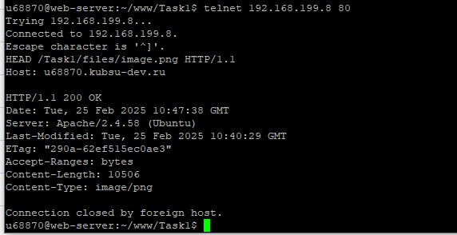
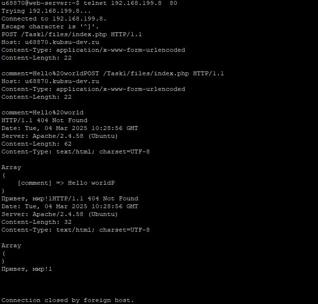
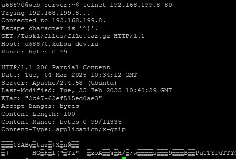
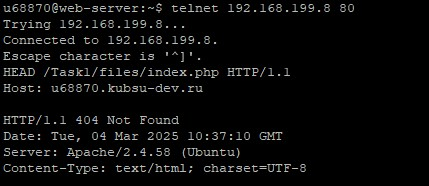

Чтобы получить главную страницу сайта методом GET с помощью протокола HTTP/1.0 нужно ввести следующие команды. Telnet - сетевой протокол, который позволяет пользователям подключаться к удаленным компьютерам через текстовый интерфейс. Telnet чаще всего используется для удаленного управления устройствами или получения доступа к сервисам, работающим на порте (например, HTTP на порту 80). Протокол HTTP/1.0 — это версия протокола передачи гипертекстовых данных (HTTP), который используется для обмена информацией между клиентом (например, веб-браузером) и сервером. HTTP/1.0 основан на принципе "Запрос-Ответ", где клиент отправляет запрос на сервер, а сервер отвечает на этот запрос.
После отправки запроса мы получим ответ от сервера. Сервер выдаст заголовки и тело ответа, если запрашиваемая страница существует. HTTP/1.1 поддерживает постоянные соединения по умолчанию, что позволяет клиенту и серверу удерживать соединение открытым для нескольких запросов/ответов. HTTP/1.1 расширяет возможности заголовков, позволяя передавать дополнительные параметры, такие как кэширование, поддержка фрагментов и другие.
Чтобы определить размер файла, не скачивая его, используем мeтод HEAD На размер файла в байтах указывает значение заголовка Content-Length - в данном случае 11335
Определяем медиатип ресурса image.png так же с помощью метода HEAD На медиатип указывает значение заголовка Content-Type - в данном случае image
Отправляем комментарий на сервер по адресу /index.php при помощи метода POST. Указываем заголовки Content-Type: application/x-www-form-urlencoded, и Content-Length: 30 для корректной передачи данных
Для того, чтобы получить первые 100 байт файла, создаем GET запрос и указываем заголовок Range: bytes=0-99
Определяем кодировку ресурса index.php благодаря отправке запроса HEAD. На формат кодировки указывает значение параметра charset заголовка Content-Type В данном случае тип кодировки - UTF-8
